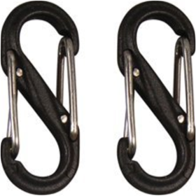

CARABINER, S-BINER PLASTIC B00DOECF8ECARABINER, S-BINER PLASTIC - Here's a fun version of our unique, two-in-one S-Biner. Made of lightweight plastic and available in 15 bright colors, its double-gated design has the same functionality and same nearly endless variety of uses. Ultra-handy dual spring gates will hold, secure, and connect everything from house keys and cell phone holsters to technical camping gear. Attach valuables to the center bar for ultimate security, link gate ends to a second set of items and anchor, or connect many items together. Smaller-sized S-Biners are excellent for connecting two zipper sliders on backpacks, duffels, and suitcases. Identify at a glance while you organize—choose different colors to differentiate sets of keys, luggage, car fobs, ski passes, water bottles, and more. |